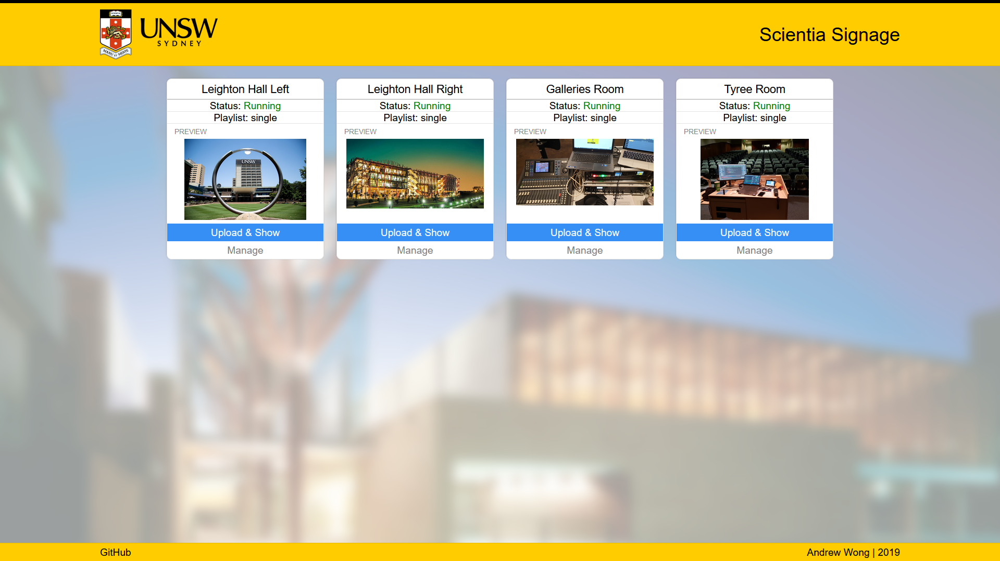
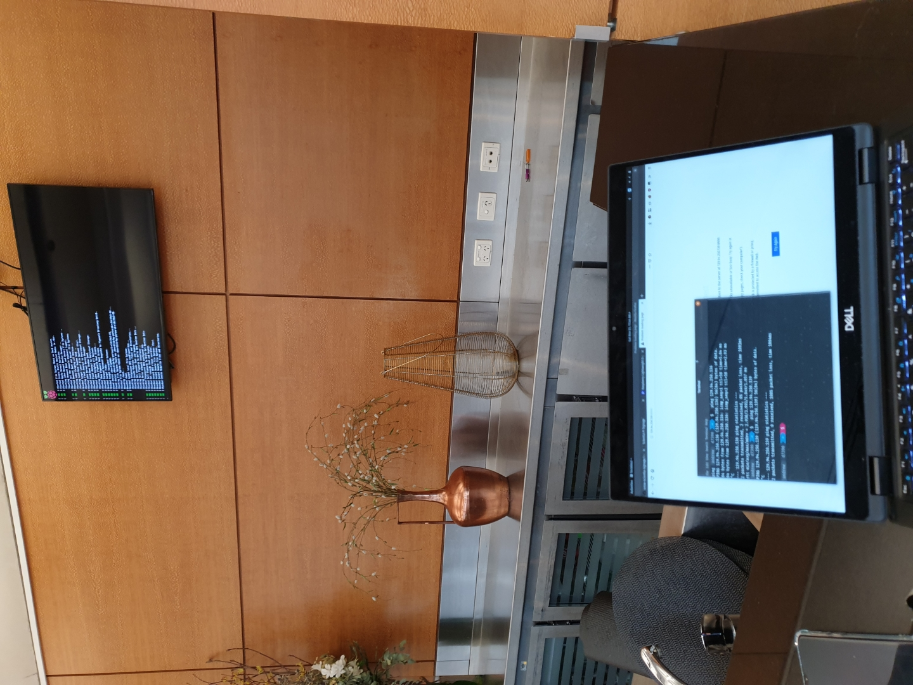

At UNSW, the Scientia building uses Raspberry Pis to manage the digital screens that display media and information.
In particular, they use PiSignage.
The general operational process for each device was:
1) Open the web interface 2) Authenticate 3) Upload a new media file 4) Add the media file to a playlist 5) Stop the playlist 6) Start the playlist
It seemed abit long-winded… something that could be automated…
Hmm. 🤔
Alright let’s do it!
Project Plan
Goal
To create a web interface to centrally manage the PiSignage devices.
Requirements
- Each device must be identifiable by its location
- The offline/online/running status of each device will be visible
- The application must be third-party-dependency free
- The application must be able to run without a server
- The application must be able to run from a
file://context
- The application must be able to run from a
Features
- Display preview
- Button to open the PiSignage web-interface (Should my code not work)
- Make it look like it’s a UNSW product.
Development
This “Single Page Application” would need to be run from a possibly offline context, where the client might not have an internet connection.
Perhaps the client might be in a firewalled environment where outbound connections to the internet are blocked.
That’s the case for the Pis we had actually, if you continue reading below
Because of this, I was unable/unwilling to use/embed a JavaScript framework like React, Vue, or my current exploration - Svelte.
This meant everything had to be Vanilla JS - nothing wrong with that! In fact I have plenty of experience from my previous sheer refusal to use large JS libraries (lmao jQuery.)
Structurally, the final product would be a single HTML page with all of the styling and scripting embedded within.
I decided to use flexboxes for each PiSignage container element.
Functionally, each PiSignage device would be associated to a SignageDevice object which would manage the interactions of the “SPA” to the actual device’s API
Product
You can see the source code on GitHub.
I’ve taken out the device data associated to the PiSignage-s used at UNSW, obviously - so I reckon it’s nicer just to watch and observe.

Alternative Systems
With the on-slaught of maintenance tasks to do for UNSW Hospitality, one of the things was actually to search for an alternative to PiSignage.
The rationale behind this was because some of the Pis had started to malfunction.

Raspberry Slideshow
We tried using Raspberry Slideshow from Binary Emotions, as it had a feature to pull images from a Dropbox folder.
This would allow the Pis to be managed from Dropbox! But it didn’t work out that well.
The issue with Raspberry Slideshow is the way in which it checks for updates.
- Every X seconds the display will go black (Issue 1: The screen is black, Issue 2: The images will only update every X seconds)
- The program will check for updates in the Dropbox folder (Issue: The screen is still black)
- The program will then download the images (Issue 1: It redownloads all images, even those unchanged. Issue 2: The screen is still black)
The issue with this implementation is that the screen will be black every time a refresh is performed.
To see less black screens, we would have to increase the refresh interval.
But increasing the refresh interval will make the time to wait to see the new images on the screen slower.
=> [System_mountFirstFoundUsbDevice] Mounting the plugged-in USB key's first partition...
ls: cannot access '/dev/disk/by-id/': No such file or directory
===> No available USB block device found (no USB key inserted or recognized). Proceeding with cached content, if any.
ls: cannot access '/dev/disk/by-id/': No such file or directory
=> [System_populateTempFolderFromDropbox] Downloading dropbox media...
===> Using account Name: Theatre Techs.
===> Downloading Dropbox media files...
> Downloading folder "/" to "/tmp/imgs4/"...
> Downloading "/IMAGE_FILE_ONE.JPG" to "/tmp/imgs4/IMAGE_FILE_ONE.JPG"... DONE
===> Dropbox folder media hash: 03b04837709085aa456510031299f9ba61792d118f6ea17fb348cbb4097d5078.
=> [System_mediaInformationsShow] The following images will be slided:
* IMAGE_FILE_ONE.JPG
=> [System_mediaInformationsShow] The following videos will be slided:
=> [System_mediaInformationsShow] Refresh time set: 15s
###############################
## THIS REPEATS INDEFINITELY ##
###############################
Sliding the following images:
/tmp/imgs4/IMAGE_FILE_ONE.JPG
Total duration: 10
using "DejaVu Sans Mono-16", pixelsize=16.67 file=/usr/share/fonts/truetype/dejavu/DejaVuSansMono.ttf
=> [System_slide] Refresh timeout reached.
###############################
## ADDING A NEW IMAGE FILE ##
###############################
=> [System_slide] New Dropbox media hash: 1894fdd77b8ce3396667e311a49fd4557bd3dc5bdcfd7e7a36f4b52333c7db0a; old was: 03b04837709085aa456510031299f9ba61792d118f6ea17fb348cbb4097d5078.
=> [System_slide] Refetching all media (@todo: refetching only Dropbox media).
=> [System_populateTempFolderFromDropbox] Downloading dropbox media...
===> Using account Name: Theatre Techs.
===> Downloading Dropbox media files...
> Downloading folder "/" to "/tmp/imgs4/"...
> Downloading "/IMAGE_FILE_ONE.JPG" to "/tmp/imgs4/IMAGE_FILE_ONE.JPG"... DONE
> Downloading "/IMAGE_FILE_TWO.JPG" to "/tmp/imgs4/IMAGE_FILE_TWO.JPG"... DONE
===> Dropbox folder media hash: 1894fdd77b8ce3396667e311a49fd4557bd3dc5bdcfd7e7a36f4b52333c7db0a.
=> [System_mediaInformationsShow] The following images will be slided:
* IMAGE_FILE_TWO.JPG
* IMAGE_FILE_ONE.JPG
###############################
## REMOVING AN IMAGE FILE ##
###############################
=> [System_slide] New Dropbox media hash: f416bc98359f17ef5b7afa49a7be7538942b5f086c392a3c1a60800e535459aa; old was: 1894fdd77b8ce3396667e311a49fd4557bd3dc5bdcfd7e7a36f4b52333c7db0a.
=> [System_slide] Refetching all media (@todo: refetching only Dropbox media).
=> [System_populateTempFolderFromDropbox] Downloading dropbox media...
===> Using account Name: Theatre Techs.
===> Downloading Dropbox media files...
> Downloading folder "/" to "/tmp/imgs4/"...
> Downloading "/IMAGE_FILE_TWO.JPG" to "/tmp/imgs4/IMAGE_FILE_TWO.JPG"... DONE
===> Dropbox folder media hash: f416bc98359f17ef5b7afa49a7be7538942b5f086c392a3c1a60800e535459aa.
=> [System_mediaInformationsShow] The following images will be slided:
* IMAGE_FILE_TWO.JPG
Balena Dash and Screenly OSE
Another solution I found was Balena Dash, a dashboard software I thought would work as a Digital Signage.
Unfortunately the university had old models of the RPi, and did not meet the hardware requirements of 1GB RAM.
Another solution was Screenly - Open Source Edition.
It looked decent and usable, so I tried to deploy it on Balena Cloud.
Except, the 4 Raspberry Pis were blocked from making outbound connections so I couldn’t get them registered.
Even bypassing this by registering at home, they were unable to connect to the cloud at university, so this attempt has been thwarted too!
I did end up trying to to install Screenly OSE without Balena Cloud, but honestly I prefer PiSignage more, so I ended up reflashing it.
Ultimately the issue seemed to be a bad microSD card that was causing corruption on one of the two reported devices.
As for the other reported device, I’m not too sure what caused it to break but as of today, the reinstalled PiSignage software is still working fine; though the device does seem to respond considerably slower than the other devices.